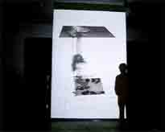
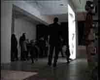

|

|
|  |
 |
Inoutsite
I and II show the statistics of space usage. The arrows show the direction
of movement, the lines are the traces of persons in the space. The height
of the net, which floats like a virtual roof above the scene under observation,
indicates the frequency of people walking through this space. The more
frequently the space is entered the lower the net sinks. The clouds in
the centre depict the same information in the form of a coloured mist.
It soon became visible that people in the space under surveillance avoided
the centre and predominantly stayed in the corners of the space.
Low tones denote the corners of the space, high tones the centre of the
space.